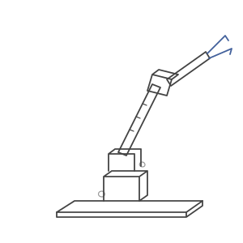

2017 – now
Karan's Lab Notebook
Not a CV. A log of things I built, how I thought, what broke, what I learned.
Early entries built before ChatGPT. Every bug was read, not prompted.

it still follows people around
property of: Karan · robotics, UTS Sydney
GitHub: karanS08 · 0802karans@gmail.com · papers: arXiv and ACRA 2026, links once they're out
Last updated: